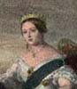
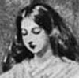

-

- 
-

-
 From Louise Creighton, Some Famous Women.")
-
 From Louise Creighton, Some Famous Women.")
-
 From Louise Creighton, Some Famous Women.")
-

-

-
 by J. Durham. From Mary Howitt, ed., Biographical Sketches of the Queens of England.")
- 
-

-

-

Queen Victoria
Milestones
- 1819
-
BirthKensington Palace
- 1837
-
VocationAccession
- 1840
-
MarriageWedded to Prince Albert
- 1861
-
OrdealDeath of Prince Albert
- 1887
-
RecognitionGolden Jubilee
- 1901
-
Death
Queen Victoria: Performing Mixed Emotions Again and AgainRead more...
Alison Booth
Rosa Nouchette Carey begins her four-chapter, seventy-seven page biography of "Her Majesty the Queen" with excessive signals of authority. After redundant chapter titles, "Childhood and Youth," "Victoria the Good," comes an epigraph by Wordsworth, praising the auspicious birth of Victoria. It is actually an excerpt—ten tetrameter lines of the "Quartet"—of Wordsworth's "Ode on the Installation of His Royal Highness Prince Albert as Chancellor of the University of Cambridge in 1847," a kind of fairytale musical (15). The "Quartet" ends with Time's prophecy that Victoria will be that rare sovereign who enjoys the blessing of love. Wordsworth's occasional poem, a court masque guided by divine allegories, anticipates the spirit of this ponderous, royalist biography. But this is also a biography set in recent national history, as signalled by a second epigraph, from the historian Thomas Macaulay:
Rosa Nouchette Carey begins her four-chapter, seventy-seven page biography of "Her Majesty the Queen" with excessive signals of authority. After redundant chapter titles, "Childhood and Youth," "Victoria the Good," comes an epigraph by Wordsworth, praising the auspicious birth of Victoria. It is actually an excerpt—ten tetrameter lines of the "Quartet"—of Wordsworth's "Ode on the Installation of His Royal Highness Prince Albert as Chancellor of the University of Cambridge in 1847," a kind of fairytale musical (15). The "Quartet" ends with Time's prophecy that Victoria will be that rare sovereign who enjoys the blessing of love. Wordsworth's occasional poem, a court masque guided by divine allegories, anticipates the spirit of this ponderous, royalist biography. But this is also a biography set in recent national history, as signalled by a second epigraph, from the historian Thomas Macaulay:
When the time comes for the history of the reign of Queen Victoria to be written, it will be found that no equal epoch since the commencement of the Christian era—except, perhaps, that which includes the discovery of America, the invention of printing, and the Reformation—has been so full of important events, affecting the condition and progress of the human race.
Macaulay alludes to the progress of science, technology, "the subjugation of nature to the use of man," and the general advancement of society in education, morals, and religion (15). Victoria's progress is linked to a tradition of the English queen regnant: Carey approvingly cites Lord Macaulay's analogy representing Victoria as "a wiser, gentler, happier Elizabeth" (15-16).
Carey continues her exposition of biography's stable conditions and the key life event, birth:
The whole life of our beloved Queen, as we know it up to the present day, is a Royal Idyll, noble in its simplicity, its truth, its purity; and as child, crowned maiden, wife, mother, and widowed ruler, she alike claims our reverence and love. It was a blessed day for England, that 24th of May, 1819, when in the grey old palace at Kensington the girl baby opened her blue eyes first on this world. The only child of the popular Duke of Kent and his wife, the widowed and charming Princess of Leiningen, great was her father's rejoicing at her birth. 'Take care of her, for she will be Queen of England,' he would say, with fond pride....(16)
A tale of royal progress can have the stilted pace of a processional, but the grandeur may be belied by a leveling tendency to include indiscriminate details and to mix emotional registers. The account runs through her information: the baptism of Princess Alexandrina Victoria on June 24, 1819; the infant's distinction as the first British royal person to be vaccinated; the family holiday to Sidmouth, "where the little one thrived in the health-giving Devonshire air; but alas!" her father caught a fatal chill. Carey juxtaposes the father's death with the vitality of the future queen, dwelling on a sentimental anecdote (without attribution): "There is a sweet word-picture here; for we are told that the royal infant, 'being held up at the carriage window to bid the assembled population of Sidmouth farewell, sported and laughed joyously, and patted the glass with her pretty dimpled hands, in happy unconsciousness of her melancholy bereavement.'...how vividly one seems to see it!"(18).
As the biography proceeds, the reader will become familiar with Carey's preference for such word pictures, emblems, or narrative paintings contrasting innocent youth with warnings of death; there will be many similar public spectacles of Victoria's emotion. Often the scene seems to value the royal capacity to override the more natural affect of an occasion.
Carey almost admits that it is difficult to write an interesting narrative about the living queen, about whom we know everything but may actually have little to say. Thus, on the task of biography, the fifth and sixth paragraphs, each a sentence long:
As we follow the footsteps of the Royal child from infancy to childhood, and on through her early youth, the curtain seems to rise for us again and again; and some never-to-be-forgotten picture is placed before our eyes—...rich with nature's verity, and warm with colour.
Every writer who has striven to pourtray the leading incidents of Queen Victoria's life has seized eagerly on these little episodes, which seem to stand out with cameo-like clearness, and one by one to reproduce them. (18)
Each of these cameos hints that it might have been mass produced. How to avoid the effect of a curtain rising again and again? The national audience rehearses and performs sentiments memorized over a collective lifetime of the Queen's reign. But Carey finds it worthwhile to quote anecdotes by eminent witnesses of the royal childhood. "The great philanthropist William Wilberforce writes to Hannah More, on July 21st, 1820" of an invitation to wait on the Duchess of Kent. "'She received me with her fine animated child on the floor beside her with her playthings, of which I soon became one.' The life at Kensington Palace was as simple as that of any English household" (18). The future queen is capable of making fond fools of statesmen, it seems—or of making a domestic scene a model of the nation. This national home is at once cosy (Princess and mother always share a bedroom) and bucolic (on summer days, they take their simple breakfast outdoors among flowers and birds); run like clockwork, it is an infallible program of self-improvement. Several sources attribute national well-being to the disciplined program that kept Victoria morally in tune, albeit lonely and a bit taxed with surveillance (19).
Baroness Lehzen, the governess, plays her part in narratives of Victoria's education. In a letter to the Queen dated December 2nd, 1867, the Baroness recalls "'some remarkable words of your Majesty when only twelve years old, while the Regency Bill was still in progress. I then said to the Duchess of Kent that now for the first time your Majesty ought to know your place in the succession.'" The two older women agreed to place the genealogy in the girl's history book, as part of the lesson she was to study. On discovering it, the Princess remarks, "'I see I am nearer the throne than I thought.'" In a moment she continues to her governess,'Now, many a child would boast; ...There is much splendour, but much responsibility.' The Princess, having lifted up the forefinger of her right hand, gave me that little hand, saying, 'I will be good, dear Lehzen; I will be good.'" Lehzen recalls that Victoria said she would be glad if Adelaide (wife of Willim IV) gave birth to an heir in place of Victoria, since the queen was so fond of children. Carey concurs with the queen's former governess that Victoria was promising, in every sense: "One must surely allow that these were remarkable words to be spoken by a child of twelve" (21).
A rosy picture of the Duchess of Kent's nurture of a thoroughly English princess cannot hide some conflicts. In a tone that blends biography, history, and fiction for girls, Carey recounts that the Princess was presented at Court on Queen Adelaide's birthday, on February 24th, 1831, but was conspicuously absent at the coronation of William IV. Carey perceives nothing controversial in Parliament's designation of the Duchess of Kent as Regent with annual support totalling £16,000 (22-23), and appears mystified by King William's "painful" outburst against this potential Regency at his own birthday dinner, when he vowed to live long enough to prevent it. William publicly repudiated the Duchess and commanded her daughter in future to "appear at Court on all occasions" (24).
If William saw a plot, so does Carey, but unlike the recent film portrayal of "the young Victoria," this Victorian biography has no objection to the extreme control exercised over the royal princess. The romance plot had little suspense, in any case, with mother and uncle working as matchmakers. The Duchess of Kent invited the Duke of Coburg and his sons Ernest and Albert for a visit of "nearly four weeks at Kensington Palace, and the cousins spent delightful days together, playing duets on the piano, sketching, walking and riding, and visiting the chief attractions of the Metropolis," while the young parties supposedly were left to form their own voluntary attachment (24-25). Carey concludes her first chapter when Victoria comes of age in May, 1837, the public celebrations followed quickly by the death of William IV.
The second chapter, "Accession and Marriage," begins with two well-known epigraphs by Elizabeth Barrett Browning, her praise of "the weeping Queen" who "wept to wear a crown," and a tercet from "A Vision of Poets" on the close association of "church and mart," "dream or grave." Carey meditates on the proximity of death in the happiest of times in life—"Life and death, buoyant youth and senile decay, and light tripping feet moving with averted eyes among the graves!"— pointing to the repentant death of William IV as preamble to the rise of the young queen (27). The emblem of corrupt (masculine) age and innocent (feminine) youth was irresistible, as Charles Dickens's The Old Curiosity Shop suggested in the early days of Victoria's reign (1840-1841).
The virgin princess appears in a kind of Annunciation scene and Carey's readers are invited to recall it. "A Royal Idyll indeed!—it reads to us still like a fairy tale; we heard it first at our mother's knee" (28). The Angel Gabriel takes the form of court dignitaries, arriving at the palace to wake the Princess to her new calling. Carey quotes "Miss Wynn in her 'Diary of a Lady of Quality'": the Princess "'came into the room in a loose white nightgown and shawl, her nightcap thrown off, and her hair falling upon her shoulders, her feet in slippers, tears in her eyes, but perfectly collected and dignified'" (28). Indeed, Carey shares the public's urge to portray a weeping yet disciplined queen. Victoria's own recollection of the news of her uncle's death is less melodramatic, but emphasizes that she was sent into see the Archbishop of Canterbury and the Lord Chamberlain alone.
Carey's Victoria is a model providentially fit for a national destiny, yet full of repressed emotion natural to a young girl. As a "'multitude of men'" swear allegiance to her in the first Privy Council she performs just the mixture of feelings that should be detected but not expressed: her blush, her occasional glance "'at Melbourne for instruction'" as she appears to ignore protocols of rank, greeting all graciously (Greville quoted in Carey 30). After the equivalent of a trial scene, she insists on being left alone in her mother's room for two hours. No one knows, and yet all loyal subjects readily imagine what the Queen was thinking. "No one dare invade that sacred privacy; but we may believe that that fair young head was bowed in earnest prayer for strength and wisdom to fulfil the duty." The monarch's interior monologue seems to become a meditation on her own title: "'Victoria Regina, by the grace of God, Queen of the United Kingdom of Great Britain and Ireland'" (30), yet we are not to imagine she pronounced it aloud. Her letter of condolence to William's widow was addressed to "Her Majesty the Queen": "'I will not be the first person to remind her of it'" (30)—another of the speeches or reticences displayed like gems on velvet.
Carey's narrative follows day by day and hour by hour the test of the new monarch: "On the following morning, June 21st, the Queen, accompanied by her mother, drove in state to St. James's Palace. The guns in the Park fired a salute at ten o'clock, and immediately the 'little Queen' stood at the window of the Presence Chamber in full view of the crowd, while the band of the Royal Guards struck up the National Anthem"; the proclamation is read aloud by the correct functionaries. The collective gaze takes an impression of a sacrificial figure: "The Queen looked very pale and fatigued. She was dressed in deep mourning, with a white tippet, white cuffs, and a border of white lace under a small black bonnet, which was placed far back on her head, exhibiting her light hair in front, simply parted over her forehead. She appeared deeply affected at the acclamations of her people, and was observed to shed tears" (31). Elizabeth Barrett Browning reappears in the final stanza of the poem quoted in the epigraph, here offering a blessing that Victoria "will not weep / To wear that heavenly crown" (31).
Carey collates the testimony of famous witnesses of the first actions of the new queen. Thus, the celebrated actress Fanny Kemble writes: "The Queen is not handsome, but very pretty, and the singularity of her great position lent a sentimental and poetical charm to her youthful face and figure. The serene, serious sweetness of her candid brow and clear soft eyes gave dignity to the girlish countenance; while the want of height only added to the effect of extreme youth of the round but slender figure, and gracefully moulded hands and arms. The Queen's voice was exquisite, nor have I ever heard any spoken words more musical in their gentle distinctness than 'My Lords and Gentlemen,' which broke the breathless silence of the illustrious assembly, whose gaze was riveted on that fair flower of royalty. The enunciation was as perfect as the intonation was melodious, and I think it is impossible to hear a more excellent utterance than that of the Queen's English by the English Queen."
This young woman's every utterance has become performative—documented and carrying the force of a vow or a law. Thus, Carey recounts Victoria's first of "many deeds of mercy," the pardon of a deserter (32), followed by the resolve of "'sacred duty'": "'I want to pay all that remains of my father's debts,' she said to the Prime Minister" (32). Lord Melbourne, now in loco parentis, devotes himself "to educate, instruct and form the most interesting mind and character in the world," writes George Villiers to Greville, in turn quoted by Carey (33). With Melbourne's guidance, Victoria "showed that untiring industry and remarkable aptitude for business that was to set such a noble example to her subjects" (33).
The girl who vowed to be good institutes a daily routine the nation might safely follow (or envy). Carey quotes an outline of the Queen's day in present tense that shifts to past in Carey's own words: She "'gets up soon after eight o'clock, breakfasts in her own room, and is employed the whole morning in transacting business....and has every matter of interest and importance in every department laid before her. At eleven or twelve Melbourne comes to her and stays an hour, more or less.... At two she rides with a large suite (and she likes to have it numerous); Melbourne always rides at her left hand, and the equerry-in-waiting on her right'"—a seemingly dogged gallop of state for two hours "along the road"—followed by "'music and singing, playing and romping with children'" of the court. Dinner convenes at 7:30 but the Queen "seldom appears before eight" (33-34). Victoria "would not allow the gentlemen to remain over their wine more than a quarter of an hour, but always remained standing in the drawing-room until they appeared. Coffee was then served, and after the Royal hostess had said a few words to each of her guests, the Duchess of Kent's whist table was arranged, the round table marshalled, Melbourne always seated at her left hand, and at half-past eleven the Queen retired" (34).
Carey's chapter shifts from reiterated actions to discriminated events, the most notable being the Queen's coronation June 28th, 1838 and wedding on February 10, 1840, events relished in detail for their pomp, romance, weight. The coronation is "a magnificent and soul-stirring spectacle"; witnesses weep "during the long wearisome ceremonial," and choirboys shout "'Vivat Victoria Regina!," trumpets, drums, and guns resound, and the Queen and her mother are nearly overcome with emotion. The emotion did not, for some time, extend to a passionate urge to marry Albert.
Carey approves of Victoria's retrospective self-reproach for having kept the prince in suspense for years: Victoria writes, "'The only excuse the Queen can make for herself is in the fact, that the sudden change from the secluded life at Kensington to the independence of her position as Queen Regnant at the age of eighteen, put all idea of marriage out of her mind, which she now most bitterly repents'" (35). But the sight of Albert overcame all resistance.
Carey relies on Victoria's letters to King Leopold and Baron Stockmar, statements of private feeling clearly communicating a matter of international political concern. The young woman feels guilty for her recent resolution not to marry, but confesses "'Albert has completely won my heart, and all was settled between us this morning. ... I feel certain he will make me very happy. I wish I could say I felt as certain of making him happy, but I shall do my best'" (36). Prince Albert's own diplomatic letter to his grandmother confirms that the love was mutual; Carey interrupts excerpts of it to exclaim, "Could anything be more idyllic in its simplicity and guileless reality than this betrothal of the 'sweet Flower of May' to the princely Sir Galahad, so true to the motto of his house, 'Treu und Fest'" (37).
When the princes returned home, Victoria is reported, in correspondence between royal families, to be disconsolate. Albert wrote to the Duchess of Kent, "'What you say about my poor little bride sitting all alone in her room, sad and silent, has touched me to the heart," and Victoria later reflected on this epistolary consolation: "For 'the poor little bride' there was no lack of those sweet words, touched with the grateful humility of a manly love,...a precious foretaste to her of the happiness of the years to come" (37-38). There are several frames to this quotation of correspondence, Carey quoting the living queen's own written rereading of well-publicized exchanges of feeling years before. The romance was never a private affair. Victoria had to declare her feelings and marital intentions to Government, always manifesting her sensibility as well as her command of the performance. "'I felt my hand shake, but I did not make one mistake,'" she wrote in her journal (38).
For a guileless romance, the marriage is excessively procedural; questions must be settled of Albert's title and annuity, the wedding liturgy (to retain the word "obedience"), the wedding gown's Honiton lace, how her train is to be "borne by twelve...daughters of well-known peers" (39). Witnesses described her attire and her expressions of tearful happiness and "confidence" in the Prince as she uttered the vow. The honeymoon at Windsor, Albert's sad parting from father and brother, the departure of the Duchess of Kent to her own residence in turn bring Carey's narrative to a new phase: "And so the ideal married life began; the maiden monarch no longer stood alone—she had now a strong arm on which to lean, and a discreet and faithful adviser ever beside her. No one who saw them could doubt that it was a marriage of profound happiness and true sympathy, and the good Queen had her peerless knight—sans peur et sans reproche" (41). The chapter concludes with quatrains of a supposed song by a Scottish "peasant girl" recalling the coronation. The tropes of appearance, solitude, national spirit, shared emotion, are all condensed in the pseudo-ballad.
Like previous chapters, the third chapter begins with dual titles—"Married Life" and "Wife and Mother"—and a prestigious epigraph (this one from Tennyson on the good influence of Victoria as "Mother, Wife and Queen"). The marital happiness of Victoria and Albert counterbalances "the trammels of etiquette and the wearisome routine and burdensome duties of a court"; "the youthful pair set a noble example" in their "industry" as well as "their method of utilising their moments of leisure" (42). As in the depictions of the quasi-pastoral childhood at the palace, Carey imports eyewitness testimony, a letter quoted in a biography of Prince Albert, written by "one of the artists employed in decorating a pavilion in the garden of Buckingham Palace." The artist can attest to Victoria and Albert's superioriity to other royalty for whom he has worked.
They have breakfasted, had morning prayers with the household in the private chapel, and are out some distance from the Palace, talking to us in the summer-house, before half-past nine o'clock, sometimes earlier. After the public duties of the day and before their dinner they come out again, evidently delighted to get away from the bustle of the world to enjoy each other's society in the solitude of the garden.... Here, too, the royal children are brought out by their nurses, and the whole arrangement seems like real domestic pleasure.
Carey confirms this idyll as a reproach to common upper classes: "What an example to those frivolous butterflies of fashion always seeking after pleasure, and frittering away precious time and strength in their search for what they call happiness" (43-44).
Abruptly the theme of Victoria's virtues in contrast to "jaded worldlings" (44) leads Carey to the moral improvements of the entire Victorian age. "The Queen's influence on the stage was wonderfully beneficial; as Mrs. Oliphant observes, "she was in the foreground of the national life, affecting it always for good....The theatres to which she went, and which both she and her husband enjoyed, were purified by her presence; evils which had been the growth of years disappearing before the face of the young Queen" (44). The new era then leads Carey back to the biographer's chronological responsibilities.
The next event is the birth of the Princess Royal, on November 21, 1840. Childbearing become a habit with this couple; the Prince would always attend to his wife, moving her from bed to sofa during her confinements. "As years went on, and he became overwhelmed with work... , this was often done at much inconvenience to himself; but he ever came with a sweet smile on his face. In short, his care of her was like that of a mother, nor could there have been a kinder, wiser, or more judicious nurse" (45).
Knowing that the royal family is prolific and that Victoria and Albert are happy until his unexpected death, the reader anticipates a kind of lulling effect in this biography, perhaps to be enjoyed like a real-life fairy tale. The Prince of Wales was born November 9, 1841, and christened the following January. "The Queen writes in her Journal: 'To think we have two children now, and one who enjoys the sight already (the Christmas-tree); it is like a dream.' And again, in a pretty, maternal way, 'Albert brought in dearest little Pussy (Princess Victoria) in such a smart white merino dress, trimmed with blue' and sitting together as a family of four gave her a feeling of happiness (45-46). Carey presupposes Victoria's maternal devotion—"What true womanly words!"—but recent biographers have recalled that Victoria's journals and letters indicate her general dislike of motherhood.
A modern reader might wonder about Carey's silence on subjects that usually consitute "history." This is characteristic of contemporary short biographies of the Queen, which credit her with the spirit of her age but reduce that age to a few outline events. Rather abruptly, Victoria's domestic idyll gains a background of the "troubles" of 1842. "There was terrible news from Afghanistan, and though the British arms ultimately conquered, there were fearfully heavy losses.... There was also war with China, and the condition of things at home was most unsatisfactory, and a growing agitation on account of the corn laws. There were fears of a Chartist rising, and to offer a stimulus to trade the Queen gave a bal masque at Buckingham Palace, ...'The Queen's Plantagenet Ball.'" The impertinence of a festival of consumption (and anachronism) to address an economic crisis persists in the life of Queen Victoria, with Carey's stamp of approval.
Also in 1842, Victoria survived two assassination attempts, showing "the utmost courage," and leniency toward her attackers (47). The Queen's "first railway journey" (47) initiates a series of journeys, particularly the holidays to Scotland, punctuating the catalogue of children born and relatives died. Once the text has identified the complete series of royal children, Carey devotes some paragraphs to the theme of child-rearing and education, largely through extended quotation of other biographies. Thus "that charming book, 'The Private Life of the Queen,' by one of Her Majesty's servants, tells us that the Queen 'always made time in her busy life to bathe with her own hands the last new baby'" (49). Predictably, Victoria repeats the principles of her own upbringing, "simplicity," "discipline," sequestration from "Court life," along with the employment of first-rate instructors in languages and arts, and conscientious religious training (49).
Carey's seems surprisingly preoccupied by biographies of Prince Albert, as if sharing the Queen's infatuation. He was the Queen's "truest advisor and counsellor," and she came to "lean more on that strong arm and bright intellect" (50). It was Albert who oversaw the design and growth of the island home, Osborne. And of course it was Albert who devised the Great Exhibition, a source of joyful pride to Victoria: "'The only event it in the slightest degree reminded me of was the coronation, but this day's festival was a thousand times superior." Victoria's writing calls the opening of the Exhibition "The proudest and happiest day of... my happy life. . . . To see this great conception of my beloved husband's mind...crowned with triumphant success" (52-53).
The awkward intermingling of family and historical events continues. In 1854, Victoria declared war with Russia. "The Queen suffered so keenly for her soldiers, that one of the Royal children said to Lord Cardigan, when he came to Windsor, 'You must hurry back to Sebastopol and take it, else it will kill mamma'" (54). The following paragraphs adjoin news of the birth of the last child, engagement of the first, and "the awful tidings of the Indian Mutiny....And again the Queen's womanly sympathies were strongly excited by the terrible details of Cawnpore. On the Princess Royal's wedding day the Queen wrote in her Journal: 'The second most eventful day of my life as regards feelings. I felt as though I was being married over again myself, only much more nervous'" (54). Perhaps biography must commit such solecisms of scale and perspective. The subject's life necessarily comes to the fore; the births of children or the emotions when these children are wed inevitably claim importance, even if the subject should also care about war and genocide. It is neither the Queen's nor Carey's job to tell the complete public story.
Carey's narrative raises more than one glaring mystery in spite of its polite veneer. Why did Prince Albert fail? Carey shifts among explanations: he was strained by "his responsibility as private adviser to Her Majesty" and the "'pressure which constantly compelled him to do in one day what would have been more than ample work for two'" (unidentified source; 55-56); the doctors' diagnosed typhoid fever, contracted in a visit to a military academy in torrential rain; and yet, "Not long before his fatal illness, in speaking to the Queen, he said: 'I do not cling to life; you do, but I set no store by it'" (56). Could he have wished to fade out of a wife-like role as helpmeet to an imperial sovereign? Carey synthesizes the many famous accounts of Prince Albert's illness by Victoria, Princess Alice, and other witnesses. The chapter concludes with a verse by "our glorious Poet Laureate" and these words: "'Their works do follow them.' Truly we may say of our Great Prince that his beloved name is graven indelibly on the hearts and memories of all English men and English women" (59).
The final chapter, "Widowhood," "A Royal Mourner," with yet another occasional verse by Tennyson, begins with an exceptional self-reference by the narrator. "The writer of this sketch well remembers that melancholy Sunday, December 15th, when the omission of the Prince Consort's name from the Litany informed the congregation that their revered monarch was a widow. A thrill ran through the church" (62). The congregation's mingled prayers give way to the narrative of the queen's illness and grief, and the scene of the funeral. The loss was collective: "Throughout the country there was long and genuine mourning....'There is no one to call me Victoria now,' the Queen is said to have exclaimed, the morning of her bereavement,—and perhaps no words could have expressed more strongly the sense of her great loneliness" (63).
Carey quotes letters and poems about the episode and Victoria's continuing period of mourning. "'For some years after the death of the Prince Consort,' as Dr. Macaulay tells us, 'the Queen appeared very little in public'" although "'no official duty as neglected.' Neither did she forget the troubles of others; for when that terrible Hartley colliery disaster occurred, by which 204 miners lost their lives, Her Majesty sent a message to the effect 'that her tenderest sympathy is with the poor widows and mothers, and that her own misery only makes her feel the more for them'" (65). In response to complaints, Victoria had a letter sent to the Times to the effect that "there are other and higher duties than those of mere representation which are now thrown on the Queen alone and unassisted.'" The people will not demand that she wear herself out appearing at every ceremony.
And yet much of the remaining narrative is a series of ceremonies, some family weddings, some visits to hospitals, and some consecrations of statues or memorials to Albert. Meanwhile, the "Queen showed her deep solicitude for her subjects by causing a letter to be written to the various directors of the railway companies, calling their attention to the increasing number of serious accidents" (68), and instituted the Albert Medal for those who saved, or endeavoured to save, the lives of others from shipwreck or other perils of the sea" (69). She opened waterworks in Aberdeen and "laid the first stone" of what became the Royal Albert Hall and for St. Thomas's Hospital, among other sites (69-70).
The log of ceremonial appearances and events accumulates, sometimes in paragraphs of a single sentence. Children and grandchildren are married, fall ill, recover, or die; buidings are opened or memorials dedicated. Then, Carey shifts tactics, condensing good deeds and years in one paragraph, quoted in part here: "There were numerous other good works inaugurated by the Queen during the next few years: the laying of the foundation stone of the new Medical Examination Hall of the Royal College of Physicians and Surgeons...[etc.]. There have been three royal jubilees in the history of England, but none of them can compare with the Jubilee of June 21st, 1887, unless it be the Jubilee of 1897, when our beloved Sovereign commemorated the sixtieth year of her reign. It was a sight that thrilled all hearts when the Queen left her palace gates that June morning, surrounded by her glorious guard of honour, sons, sons-in-law and grandsons, on her way to Westminster Abbey. The fair young Queen of fifty years before was now a grey-haired woman, but the loving heart still responded to her faithful subjects' acclamations" (74).
Here Carey returns to her method of splicing biographical sources. "There can be little doubt, as Barnett Smith tells us, that 'Her Majesty has outlived all her early friends and faithful servants. All who officiated at her coronation have passed into the land of shadows. If she has tasted all the happiness of life, she has tasted likewise its bitterness, for death has ever been busy laying his finger here and there. . . . The Queen's reign is coincident with the most surprising progress at home and abroad. It has been the age of railways, of trans-oceanic steamers and of the telegraph, of free trade, parliamentary reform, and the abolition of the corn laws'" (75). Her "firm serene rule, keen intellect, and wide sympathies" have guided an age of enlightened progress and imperial expansion.
Carey repeatedly emphasizes the image of Victoria as elderly and frail. For the sake of fresh air, she sets up an outdoor office. The book "The Private Life of the Queen" is quoted as before: "'At Windsor the little Frogmore tea-house, with its lovely surroundings, is the chosen spot; and here, beneath the shade of two magnificent evergreen oaks, the Queen's writing-table and despatch-boxes are set out on fine mornings, while two mounted messengers keep up perpetual communication with the telegraph office and telephones at the Castle; and the attendant secretary stands at her side. ... In addition to the public work, the self-imposed private work done by Her Majesty is extraordinary'" (76). Unsurpassable as correspondent, the Queen makes her presence felt in letters of sympathy to the survivors of any disaster. Further, she studies Hindustani and "the Empress of India writes her diary in that language. It has been said, 'that if the Queen had been destined to write in lieu of ruling, she must have left a great mark on the literature of the country'" (76). Carey, perhaps less certain of the power of writing unless supported by many excerpts from others' texts, concludes characteristically with a poem that is also a prayer. Unlike most biographies, this one defers the expected ending, which will grant a whole nation a sense of closure in the emotionally mixed performance of a state funeral.
Links
-
David Cody, "Queen Victoria." The Victorian Web.
A concise biographical entry on Queen Victoria written by David Cody, Associate Professor of English at Hartwick College. Cody's short biography is linked through the database The Victorian Web. The webpage entry includes keyword links providing more information on milestones and central figures related to Victoria's reign, as well as access to an extensive portrait gallery. -
H. C. G. Matthew and K. D. Reynolds, "Victoria (1819–1901)." Oxford Dictionary of National Biography. Ed. H. C. G. Matthew and Brian Harrison. Oxford: OUP, 2004. Online ed. Ed. Lawrence Goldman. May 2009.
Oxford Dictionary of National Biography entry on Queen Victoria written by H. C. G. Matthew and K. D. Reynolds. Includes an extensive biography as well as a list of other sources and archive materials related to Queen Victoria. Provides a link to the National Archive and images of Victoria contained in the National Portrait Gallery. -
Helen Rappaport, Queen Victoria: A Biographical Companion. Oxford and Santa Barbara: ABC-CLIO, 2002.
Helen Rappaport's alphabetized reference book on subjects related to Queen Victoria. Includes people, events, interests and places amoung the many subjects that are biographically tied to Victoria. Linked through Google Books to a preview of the text which includes a large portion of the content. -
Lytton Strachey, Queen Victoria. New York: Harcourt, Brace & Co., 1921.
Lytton Strachey's (author of Eminent Victorians) biography about the life and reign of Queen Victoria. This digitized, full-text version of the biography includes multiple illustrations of Victoria and other prominent figures associated with her life. Text linked through Google Books. -
Margaret Homans and Adrienne Munich, ed., Remaking Queen Victoria. Cambridge: Cambridge U P, 1997.
An authoritative collection of critical articles about Queen Victoria written by various contributors and edited by Margaret Homans and Adrienne Munich. Linked through Google Books to a preview of the text which includes a portion of the content from the articles as well as some of the illustrations which appear in the book.